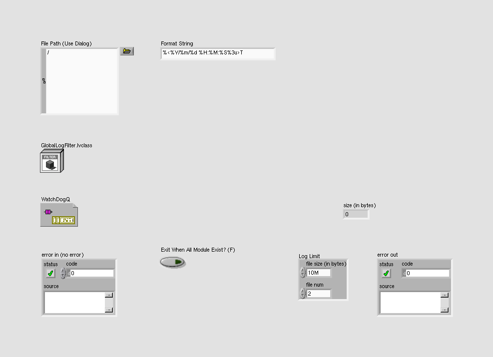
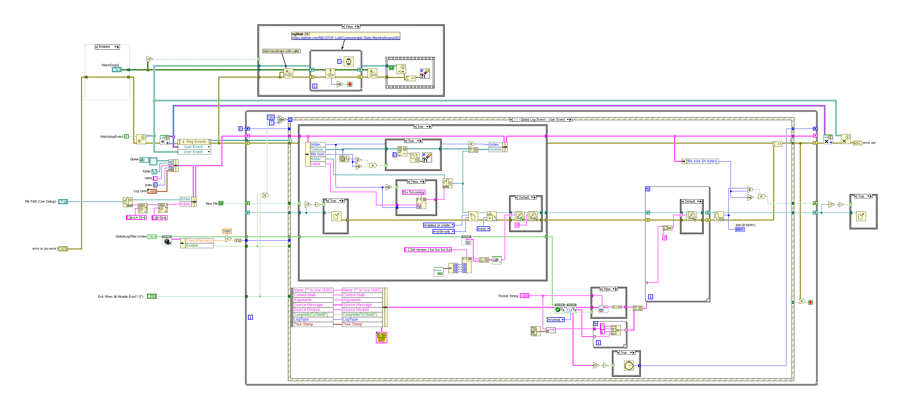
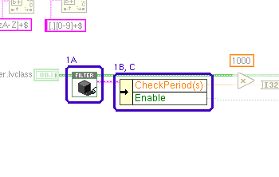
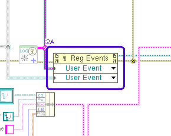
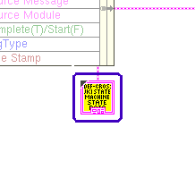
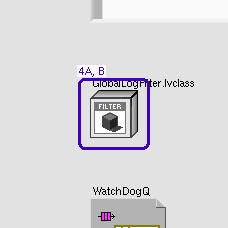

LabVIEW VI Comparison Report
07:07:03 10/29/2026
First VI: /workspace-base/src/user.lib/_NEVSTOP/Communicable State Machine(CSM)/addons/Logger/CSM-Logger-Thread(Event).viSecond VI: /workspace/src/user.lib/_NEVSTOP/Communicable State Machine(CSM)/addons/Logger/CSM-Logger-Thread(Event).vi
| Front Panel Overview | ||

|
 | |
| Block Diagram Overview | ||

|
 |
- Front Panel
- Front Panel Position/Size
- Block Diagram Functional
- Block Diagram Cosmetic
- VI Attribute
Detailed Information
1. Block Diagram objects
| /workspace-base/src/user.lib/_NEVSTOP/Communicable State Machine(CSM)/addons/Logger/CSM-Logger-Thread(Event).vi | /workspace/src/user.lib/_NEVSTOP/Communicable State Machine(CSM)/addons/Logger/CSM-Logger-Thread(Event).vi | |

|
 |
- SubVI "Communicable State Machine.lvlib:LogFilter.lvclass:Read Rules.vi" - reentrant VI : changed from "reentrant" to "non-reentrant"
- Unbundle By Name - element replaced : changed from "PeriodicLog.CheckPeriod(s)" to "PeriodicMessageFilter.CheckPeriod(s)"
- Unbundle By Name - element replaced : changed from "PeriodicLog.Enable" to "PeriodicMessageFilter.Enable"
2. Block Diagram objects
| /workspace-base/src/user.lib/_NEVSTOP/Communicable State Machine(CSM)/addons/Logger/CSM-Logger-Thread(Event).vi | /workspace/src/user.lib/_NEVSTOP/Communicable State Machine(CSM)/addons/Logger/CSM-Logger-Thread(Event).vi | |

|
 |
- Register For Events - class difference
3. Block Diagram objects
| /workspace-base/src/user.lib/_NEVSTOP/Communicable State Machine(CSM)/addons/Logger/CSM-Logger-Thread(Event).vi | /workspace/src/user.lib/_NEVSTOP/Communicable State Machine(CSM)/addons/Logger/CSM-Logger-Thread(Event).vi | |

|
 |
- Enum Constant - number of text items : changed from "12" to "14"
4. Front Panel - LabVIEW Object
| /workspace-base/src/user.lib/_NEVSTOP/Communicable State Machine(CSM)/addons/Logger/CSM-Logger-Thread(Event).vi | /workspace/src/user.lib/_NEVSTOP/Communicable State Machine(CSM)/addons/Logger/CSM-Logger-Thread(Event).vi | |
|
 |

|
- LabVIEW Object "GlobalLogFilter.lvclass" - data value : changed from "(Communicable State Machine.lvlib:LogFilter.lvclass: {Rules => {Global => {CSM => [], LogType => [], State => [], StateType => []}, CSM => {LogType => [], State => [], StateType => []}, PeriodicLog => {Enable => True, Threshold(#/s) => 2.000E+0, CheckPeriod(s) => 1.000E+0}}, Cache => {Global => {CSM => [], State => []}, CSM => {LogTypeMap => <Variant\n: Empty>, StateMap => <Variant\n: Empty>, StateTypeMap => <Variant\n: Empty>}}})" to "(Communicable State Machine.lvlib:LogFilter.lvclass: {Rules => {Global => {CSM => [], LogType => [], State => [], StateType => [], Broadcast => [], UserLog => []}, CSM => {LogType => [], State => [], StateType => [], Broadcast => [], UserLog => []}, PeriodicMessageFilter => {Enable => True, Threshold(#/s) => 2.000E+0, CheckPeriod(s) => 1.000E+0}}, Cache => {Global => {CSM(lower) => [], State(lower) => [], Broadcast(lower) => [], UserLog(lower) => []}, CSM => {LogTypeMap => <Variant\n: Empty>, StateMap => <Variant\n: Empty>, StateTypeMap => <Variant\n: Empty>, BroadcastMap => <Variant\n: Empty>, UserLogMap => <Variant\n: Empty>}}})"
- LabVIEW Object "GlobalLogFilter.lvclass" - default data value : changed from "(Communicable State Machine.lvlib:LogFilter.lvclass: {Rules => {Global => {CSM => [], LogType => [], State => [], StateType => []}, CSM => {LogType => [], State => [], StateType => []}, PeriodicLog => {Enable => True, Threshold(#/s) => 2.000E+0, CheckPeriod(s) => 1.000E+0}}, Cache => {Global => {CSM => [], State => []}, CSM => {LogTypeMap => <Variant\n: Empty>, StateMap => <Variant\n: Empty>, StateTypeMap => <Variant\n: Empty>}}})" to "(Communicable State Machine.lvlib:LogFilter.lvclass: {Rules => {Global => {CSM => [], LogType => [], State => [], StateType => [], Broadcast => [], UserLog => []}, CSM => {LogType => [], State => [], StateType => [], Broadcast => [], UserLog => []}, PeriodicMessageFilter => {Enable => True, Threshold(#/s) => 2.000E+0, CheckPeriod(s) => 1.000E+0}}, Cache => {Global => {CSM(lower) => [], State(lower) => [], Broadcast(lower) => [], UserLog(lower) => []}, CSM => {LogTypeMap => <Variant\n: Empty>, StateMap => <Variant\n: Empty>, StateTypeMap => <Variant\n: Empty>, BroadcastMap => <Variant\n: Empty>, UserLogMap => <Variant\n: Empty>}}})"